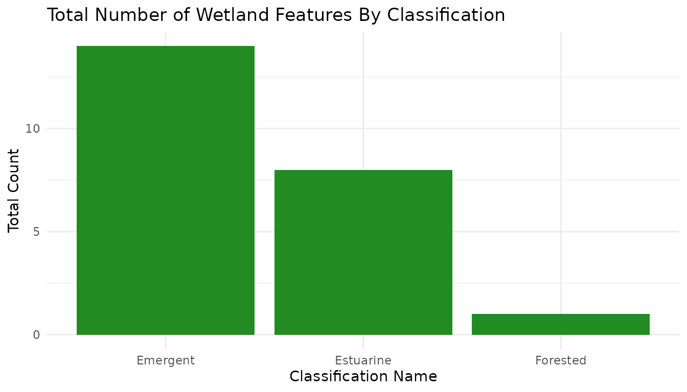

Working With NYC Wetlands Data
Shannon Joyce
Source:vignettes/analyzing-nyc_wetlands.Rmd
analyzing-nyc_wetlands.Rmd
knitr::opts_chunk$set(warning = FALSE, message = FALSE)
library(nycOpenData)
library(ggplot2)
library(dplyr)
library(knitr)Introduction
New York City is home to many wetland features. In an effort to grow
awareness of their existence and multitude, this
dataset containing the geographic locations and descriptions of
wetland features was created. In R, the nycOpenData package
can be used to pull this data directly.
The nycOpenData package provides a streamlined interface
for accessing New York City’s vast open data resources. It connects
directly to the NYC Open Data Portal. It is currently utilized as a
primary tool for teaching data acquisition in Reproducible
Research Using R, helping students bridge the gap between raw city
APIs and tidy data analysis.
By using the nyc_wetlands() function, we can gather the
most recently listed wetland features in New York City, and filter based
upon any of the columns inside the dataset.
Note:
nyc_wetlands()automatically sorts in descending order based on the verificationstatusyear column. Due to this order, the first group of rows areUnverified, so the verificationstatus year is omitted for those rows.
Pulling a Small Sample
To start, let’s pull a small sample to see what the data looks like.
By default, the function pulls in the 10,000 most recent
additions, however, let’s change that to only see the latest 3
additions. To do this, we can set limit = 3.
small_sample <- nyc_wetlands(limit = 3)
small_sample
#> # A tibble: 3 × 6
#> classname objectid verificationstatus verificationstatusyear multipolygon_type
#> <chr> <dbl> <chr> <dbl> <chr>
#> 1 Emergent 786 verified-Rapid fi… 2024 MultiPolygon
#> 2 Emergent 754 Verified - Rapid … 2024 MultiPolygon
#> 3 Emergent 745 Verified - Rapid … 2024 MultiPolygon
#> # ℹ 1 more variable: multipolygon_coordinates <list>
# Seeing what columns are in the dataset
names(small_sample)
#> [1] "classname" "objectid"
#> [3] "verificationstatus" "verificationstatusyear"
#> [5] "multipolygon_type" "multipolygon_coordinates"Fantastic! We successfully pulled wetlands data from the NYC Open Data Portal.
Let’s now pull the complete dataset to work with:
Pulling Full Dataset
wetlands_data <- nyc_wetlands(limit = 100)
# Let's take a look at what our full dataset looks like
wetlands_data |>
slice_head(n = 6)
#> # A tibble: 6 × 6
#> classname objectid verificationstatus verificationstatusyear multipolygon_type
#> <chr> <dbl> <chr> <dbl> <chr>
#> 1 Emergent 6521 Verified - Rapid … 2024 MultiPolygon
#> 2 Forested 6506 Verified - Rapid … 2024 MultiPolygon
#> 3 Forested 6440 Verified - Rapid … 2024 MultiPolygon
#> 4 Forested 6522 Verified - Rapid … 2024 MultiPolygon
#> 5 Emergent 6515 Verified - Rapid … 2024 MultiPolygon
#> 6 Scrub/Sh… 6507 Verified - Rapid … 2024 MultiPolygon
#> # ℹ 1 more variable: multipolygon_coordinates <list>In our small sample data, the first few rows’ verification status
were Unverified. Let’s see what the other values in that
column are:
wetlands_data |>
distinct(verificationstatus)
#> # A tibble: 5 × 1
#> verificationstatus
#> <chr>
#> 1 Verified - Rapid Field Protocol
#> 2 Verified - Desktop
#> 3 Verified - Wetland Delineation
#> 4 verified-Rapid field protocol
#> 5 Verified Rapid Field ProtocolNow that we see the different values in the
verificationstatus column, let’s filter out all of
the unverified wetland features:
# Creating the dataset
verified_wetlands <- wetlands_data |> filter(verificationstatus != "Unverified")
# Quick check to make sure our filtering worked
verified_wetlands |>
slice_head(n = 6)
#> # A tibble: 6 × 6
#> classname objectid verificationstatus verificationstatusyear multipolygon_type
#> <chr> <dbl> <chr> <dbl> <chr>
#> 1 Emergent 6521 Verified - Rapid … 2024 MultiPolygon
#> 2 Forested 6506 Verified - Rapid … 2024 MultiPolygon
#> 3 Forested 6440 Verified - Rapid … 2024 MultiPolygon
#> 4 Forested 6522 Verified - Rapid … 2024 MultiPolygon
#> 5 Emergent 6515 Verified - Rapid … 2024 MultiPolygon
#> 6 Scrub/Sh… 6507 Verified - Rapid … 2024 MultiPolygon
#> # ℹ 1 more variable: multipolygon_coordinates <list>
verified_wetlands |>
distinct(verificationstatus)
#> # A tibble: 5 × 1
#> verificationstatus
#> <chr>
#> 1 Verified - Rapid Field Protocol
#> 2 Verified - Desktop
#> 3 Verified - Wetland Delineation
#> 4 verified-Rapid field protocol
#> 5 Verified Rapid Field ProtocolSuccess! Now that we have our full list of verified wetland features in NYC, let’s take a look at some of its descriptive stats.
Mini Analysis
Let’s create a summary table showing how many wetland features were verified each year:
verified_per_year <- verified_wetlands |>
group_by(verificationstatusyear) |>
count(verificationstatusyear)
verified_per_year |> kable(caption = "Verified Wetland Features Per Year")| verificationstatusyear | n |
|---|---|
| 2024 | 100 |
Let’s create a bar graph to see how many wetlands of each classification are verified!
ggplot(data = verified_wetlands, aes(x = classname)) +
geom_bar(fill = "forestgreen") +
labs(title = "Total Number of Wetland Features By Classification", x = "Classification Name", y = "Total Count") +
theme_minimal()
Though this vignette only demonstrates a simple use of this function, the inclusion of geospatial data allows users to map these wetland features using the provided multipolygon coordinates.
Summary
The nycOpenData package serves as a robust interface for
the NYC Open Data portal, streamlining the path from raw city APIs to
actionable insights. By abstracting the complexities of data
acquisition—such as pagination, type-casting, and complex filtering—it
allows users to focus on analysis rather than data engineering.
As demonstrated in this vignette, the package provides a seamless workflow for targeted data retrieval, automated filtering, and rapid visualization.
How to Cite
If you use this package for research or educational purposes, please cite it as follows:
Martinez C (2026). nycOpenData: Convenient Access to NYC Open Data API Endpoints. R package version 0.1.6, https://martinezc1.github.io/nycOpenData/.